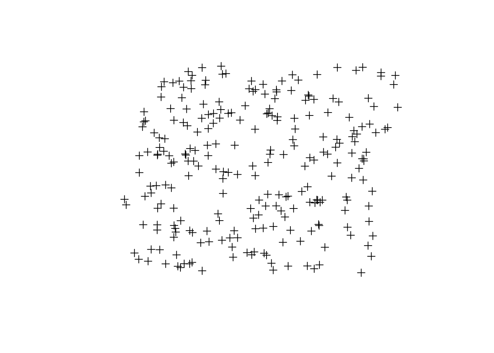
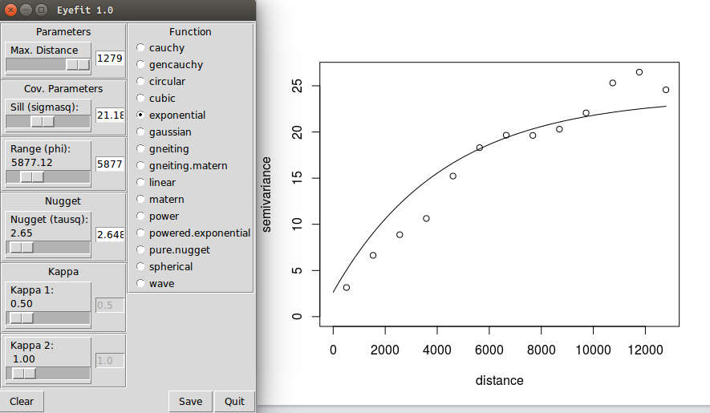
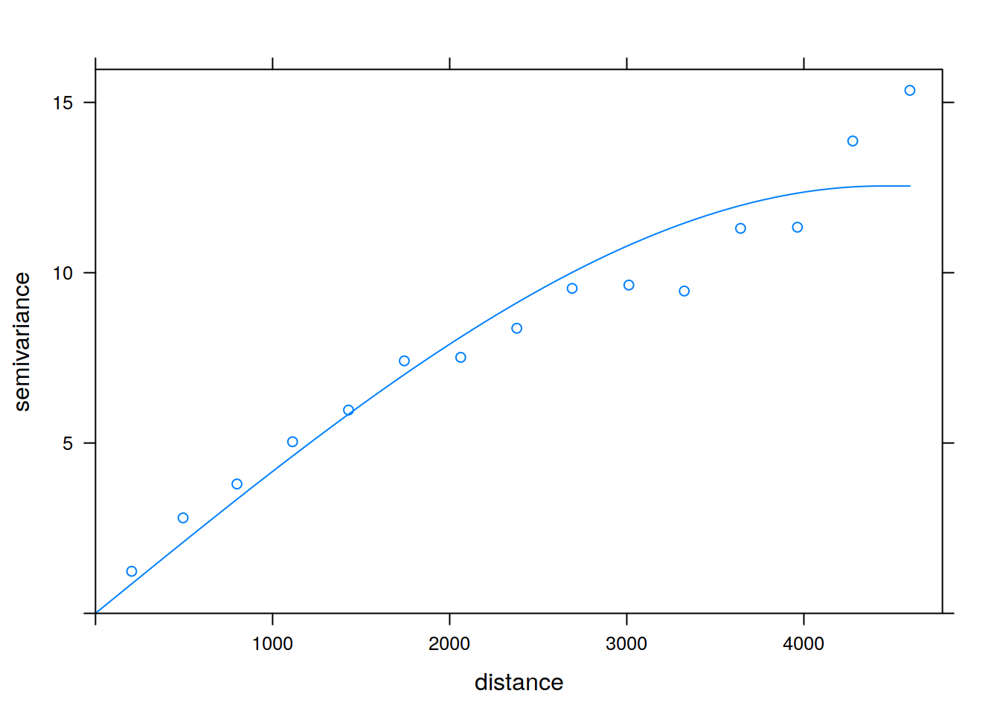
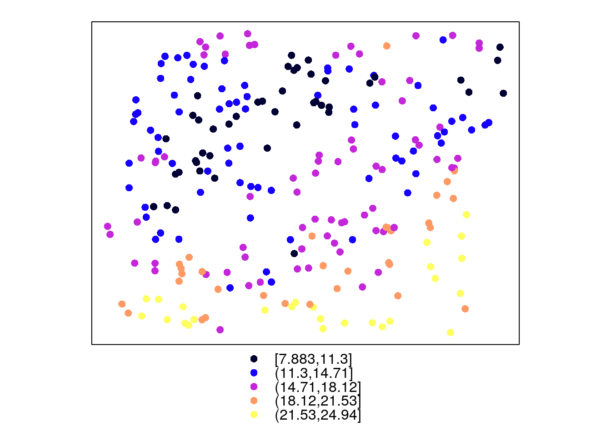
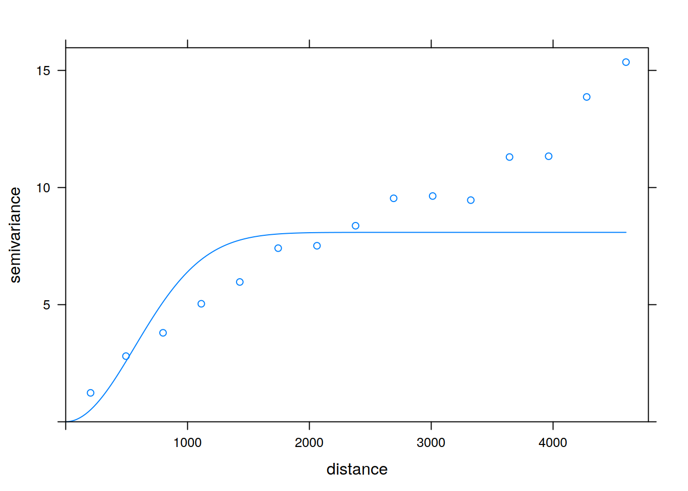
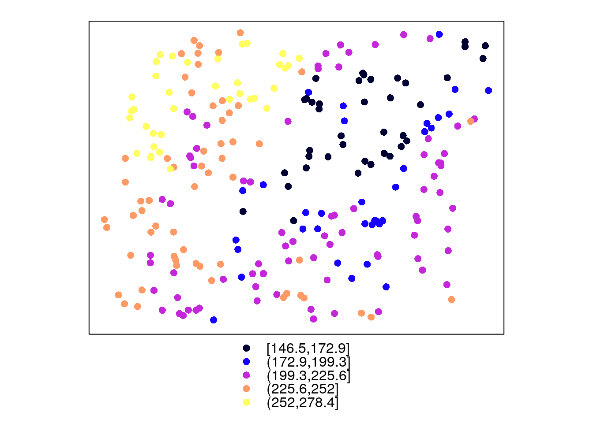

7 Modelowanie matematycznie autokorelacji przestrzennej
library('gstat')
library('geostatbook')
data(punkty)7.1 Modelowanie matematycznie autokorelacji przestrzennej
7.1.1 Modelowanie matematycznie autokorelacji przestrzennej
Semiwariogram empiryczny (wyliczony z danych punktowych) jest:
- Nieciągły - wartości semiwariancji są średnimi przedziałowymi
- Chaotyczny - badana próba jest jedynie przybliżeniem rzeczywistości, dodatkowo obciążonym błędami
Estymacje i symulacje przestrzenne wymagają modelu struktury przestrzennej analizowanej cechy, a nie tylko wartości empirycznych. Dodatkowo, matematycznie modelowanie wygładza chaotyczne fluktuacje danych empirycznych.
7.2 Modele podstawowe
7.2.1 Modele podstawowe
Pakiet gstat zawiera 20 podstawowych modeli geostatystycznych, w tym najczęściej używane takie jak:
- Nuggetowy (ang. Nugget effect model)
- Sferyczny (ang. Spherical model)
- Gaussowski (ang. Gaussian model)
- Potęgowy (ang. Power model)
- Wykładniczy (ang. Exponential model)
- Inne
Do wyświetlenia listy nazw modeli i ich skrótów służy funkcja vgm().
vgm()## short long
## 1 Nug Nug (nugget)
## 2 Exp Exp (exponential)
## 3 Sph Sph (spherical)
## 4 Gau Gau (gaussian)
## 5 Exc Exclass (Exponential class/stable)
## 6 Mat Mat (Matern)
## 7 Ste Mat (Matern, M. Stein's parameterization)
## 8 Cir Cir (circular)
## 9 Lin Lin (linear)
## 10 Bes Bes (bessel)
## 11 Pen Pen (pentaspherical)
## 12 Per Per (periodic)
## 13 Wav Wav (wave)
## 14 Hol Hol (hole)
## 15 Log Log (logarithmic)
## 16 Pow Pow (power)
## 17 Spl Spl (spline)
## 18 Leg Leg (Legendre)
## 19 Err Err (Measurement error)
## 20 Int Int (Intercept)Można się również im przyjrzeć używając funkcji show.vgms().
show.vgms()
Istnieje możliwość wyświetlenia tylko wybranych modeli podstawowych poprzez argument models.
show.vgms(models=c('Nug', 'Sph', 'Gau', 'Pow', 'Exp'), range=1.4, max=2.5)
Dodatkowo, można je porównać na jednym wykresie poprzez argument as.groups = TRUE.
show.vgms(models=c('Nug', 'Sph', 'Gau', 'Pow', 'Exp'), range=1.4, max=2.5, as.groups = TRUE)
7.3 Metody modelowania
7.3.1 Metody modelowania
Istnieją trzy najczęściej spotykane metody modelowania geostatystycznego:
- Ustawianie “ręczne” parametrów modelu, np. funkcja
vgm()z pakietugstat - Ustawianie “wizualne” parametrów modelu, np. funkcja
eyefit()z pakietugeoR - Automatyczny wybór parametrów na podstawie różnych kryterów statystycznych, np. funkcja
fit.variogram()z pakietugstat(),variofit()z pakietugeoR,autofitVariogram()z pakietuautomap
Odpowiednie określenie modelu matematycznego często nie jest proste. W efekcie automatyczne metody nie zawsze są w stanie dać lepszy wynik od modelowania “ręcznego”. Najlepiej, gdy wybór modelu oparty jest o wiedzę na temat zakładanego procesu przestrzennego.
7.3.2 Metody modelowania | funkcja eyefit()
v_eye <- eyefit(variog(as.geodata(punkty, 'temp')))
ve_fit <- as.vgm.variomodel(v_eye[[1]])
7.3.3 Metody modelowania | funkcja fit.variogram()
Funkcja fit.variogram() z pakietu gstat dopasowuje zasięg oraz semiwariancję progową w oparciu o ustalone “ręcznie” parametry modelu
7.3.4 Metody modelowania | Liniowy model regionalizacji
W przypadku, gdy analizowane zjawisko jest złożone, odwzorowanie kształtu semiwariogramu empirycznego wymaga połączenia dwóch lub większej liczby modeli podstawowych. W takiej sytuacji konieczne jest spełnienie dwóch warunków:
- Wszystkie zastosowane modele muszą być dopuszczalne (
vgm()) - Wariancja progowa każdego podstawowego modelu musi być dodatnia
7.4 Modelowanie izotropowe
Do zbudowania modelu semiwariogramu należy wykonać szereg kroków:
- Stworzyć i wyświetlić semiwariogram empiryczny analizowanej zmiennej z użyciem funkcji
variogram()orazplot() - Zdefiniować parametry semiwariogramu, tj. semiwariancja cząstkowa (
psill), skrócona nazwa używanej funkcji (model) oraz jej zasięg (range) w funkcjivgm(). Uzyskany model można przedstawić w funkcjiplot()podając nazwę obiektu zawierającego semiwariogram empiryczny oraz obiektu zawierającego model - Dopasować parametry modelu używając funkcji
fit.variogram(). To dopasowanie można również zwizualizować używając funkcjiplot()
7.4.1 Modelowanie izotropowe | Model nuggetowy
Model nuggetowy (Nug) określa sytuację, w której analizowana zmienna nie wykazuje autokorelacji. Inaczej mówiąc, niepodobieństwo jej wartości nie wzrasta wraz z odległością. Ten typ modelu najczęściej używany jest w modelach złożonych. W takich wypadkach służy on do określania, między innymi, błędu pomiarowego czy zmienności na krótkich odstępach.
vario <- variogram(temp~1, punkty)
plot(vario)
model_nug <- vgm(psill=10, model='Nug', range=0)
model_nug## model psill range
## 1 Nug 10 0plot(vario, model=model_nug)
fitted_nug <- fit.variogram(vario, model_nug)
fitted_nug## model psill range
## 1 Nug 3.933029 0plot(vario, model=fitted_nug)
7.4.2 Modelowanie izotropowe | Model sferyczny
Model sferyczny (Sph) jest jednym z najczęściej stosowanych modeli geostatystycznych. Reprezentuje on cechę, której zmienność wartości ma charakter naprzemiennych płatów niskich i wysokich wartości. Średnio te płaty mają średnicę określoną przez zasięg (range) modelu.
vario <- variogram(temp~1, punkty)
plot(vario)
model_sph <- vgm(psill=10, model = 'Sph', range=3000)
model_sph## model psill range
## 1 Sph 10 3000plot(vario, model=model_sph)
fitted_sph <- fit.variogram(vario, model_sph)
fitted_sph## model psill range
## 1 Sph 12.5445 4440.768plot(vario, model=fitted_sph)
7.4.3 Modelowanie izotropowe | Model wykładniczy
Model wykładniczy (Exp) również jest jednym z najczęściej używanych w geostatystyce. Od modelu sferycznego różni go szczególnie to, że nie ma on skończonego zasięgu. W jego przypadku, zamiast zasięgu podaje się tzw. zasięg praktyczny. Oznacza on odległość na jakiej model osiąga 95% wartości wariancji progowej.
vario <- variogram(temp~1, punkty)
plot(vario)
model_exp <- vgm(psill=10, model = 'Exp', range=3000)
model_exp## model psill range
## 1 Exp 10 3000plot(vario, model=model_exp)
fitted_exp <- fit.variogram(vario, model_exp)
fitted_exp## model psill range
## 1 Exp 16.50871 3084.309plot(vario, model=fitted_exp)
7.4.4 Modelowanie izotropowe | Model gaussowski
Model gaussowski (Gau) również posiada zasięg praktyczny definiowany jako 95% wartości wariancji progowej. Jego cechą charakterystyczną jest paraboliczny kształt na początkowym odcinku. Jest on najczęściej używany do modelowania cech o regularnej i łagodnej zmienności przestrzennej. Model gaussowski z uwagi na swoje cechy zazwyczaj nie powinien być stosowany samodzielnie, lecz jako element modelu złożonego.
vario <- variogram(temp~1, punkty)
plot(vario)
model_gau <- vgm(psill=13, model = 'Gau', range=3000)
model_gau## model psill range
## 1 Gau 13 3000plot(vario, model=model_gau)
fitted_gau <- fit.variogram(vario, model_gau)
fitted_gau## model psill range
## 1 Gau 8.085963 798.7454plot(vario, model=fitted_gau)
7.4.5 Modelowanie izotropowe | Model potęgowy
Model potęgowy (Pow) to przykład tzw. modelu nieograniczonego. Jego wartość rośnie w nieskończoność, dlatego niemożliwe jest określenie jego zasięgu. W przypadku modelu potęgowego, parametr range oznacza wykładnik potęgowy.
vario <- variogram(temp~1, punkty)
plot(vario)
model_pow <- vgm(psill=0.03, model = 'Pow', range=0.7)
model_pow## model psill range
## 1 Pow 0.03 0.7plot(vario, model=model_pow)
fitted_pow <- fit.variogram(vario, model_pow)
fitted_pow## model psill range
## 1 Pow 0.02732273 0.7382382plot(vario, model=fitted_pow)
7.4.6 Modelowanie izotropowe | Modele złożone I
Najczęściej pojedynczy model nie jest w stanie odwzorować dokładnie zmienności przestrzennej analizowanej cechy. W takich sytuacjach konieczne jest połączenie dwóch lub więcej modeli podstawowych. Najbardziej powszechny model złożony składa się z funkcji nuggetowej (dla odległości zero) oraz drugiej funkcji (dla dalszej odległości). Zdefiniowanie takiej funkcji odbywa się poprzez dodanie argumentu nugget w funkcji vgm().
vario <- variogram(temp~1, punkty)
model_zl1 <- vgm(psill=10, model = 'Sph', range = 3000, nugget = 0.5)
model_zl1## model psill range
## 1 Nug 0.5 0
## 2 Sph 10.0 3000plot(vario, model=model_zl1)
fitted_zl1 <- fit.variogram(vario, model_zl1)
fitted_zl1## model psill range
## 1 Nug 0.7346354 0.000
## 2 Sph 13.2621876 5602.027plot(vario, model=fitted_zl1)
7.4.7 Modelowanie izotropowe | Modele złożone II
Bardziej złożone modele można tworzyć z pomocą argumentu add.to. Przyjmuje on kolejny obiekt funkcji vgm() i poprzez połączenie tych dwóch obiektów otrzymuje model złożony. Na poniższym przykładzie stworzony został model złożony składający się z modelu nuggetowego oraz dwóch modeli gaussowskich.
vario <- variogram(temp~1, punkty)
model_zl2 <- vgm(10, 'Gau', 3000, add.to = vgm(4, model = 'Gau', range = 500, nugget = 0.5))
model_zl2## model psill range
## 1 Nug 0.5 0
## 2 Gau 4.0 500
## 3 Gau 10.0 3000plot(vario, model=model_zl2)
fitted_zl2 <- fit.variogram(vario, model_zl2)
plot(vario, model=fitted_zl2)
7.5 Modelowanie anizotropowe
7.5.1 Anizotropia
Uwzględnienie anizotropii wymaga zamiany parametru zasięgu na trzy inne parametry:
- Zasięg w dominującym kierunku
- Kąt określający dominujący kierunek
- Proporcję anizotropii, czyli relację pomiędzy zasięgiem w dominującym kierunku a zasięgiem w przeciwległym kierunku
W pakiecie gstat odbywa się to poprzez dodanie argumentu alpha do funkcji variogram(). Należy w niej zdefiniować analizowane kierunki, które zostały określone na podstawie mapy semiwariogramu. Następnie w funkcji vgm() należy podać nowy argument anis. Przyjmuje on dwie wartości. Pierwsza z nich (45 w przykładzie poniżej) oznacza dominujący kierunek anizotropii, druga zaś (0.4) mówi o tzw. proporcji anizotropii. Proporcja anizotropii jest to relacja pomiędzy zmiennością na głównym kierunku a kierunku prostopadłym. Na poniższym przykładzie zasięg ustalony dla głównego kierunku wynosi 4000 metrów. Wartość proporcji anizotropii, 0.4, w tym wypadku oznacza że dla prostopadłego kierunku zasięg będzie wynosił 1600 metrów (4000 metrów x 0.4).
vario_map <- variogram(temp~1, punkty, cutoff=4000, width=400, map=TRUE)
plot(vario_map)
vario_kier <- variogram(temp~1, punkty, alpha = c(45, 90, 135, 180), cutoff=4000)
plot(vario_kier, plot.numbers=TRUE)
vario_kier_fit <- vgm(psill=8, model='Sph', range=4000, nugget=0.5, anis = c(45, 0.4))
plot(vario_kier, vario_kier_fit, as.table=TRUE)